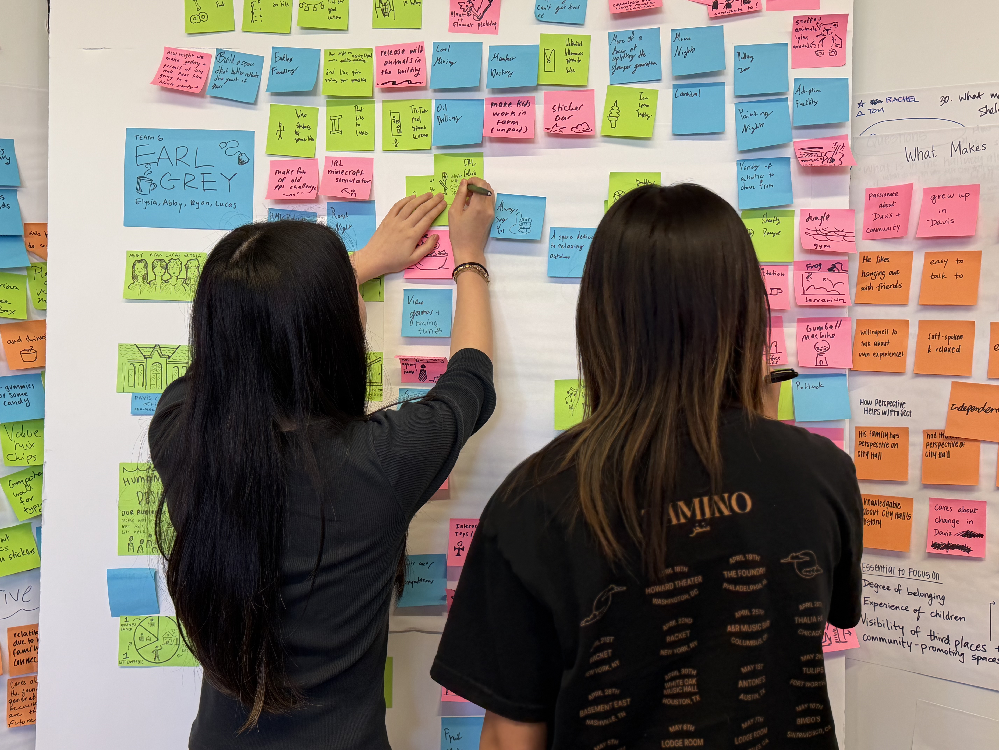
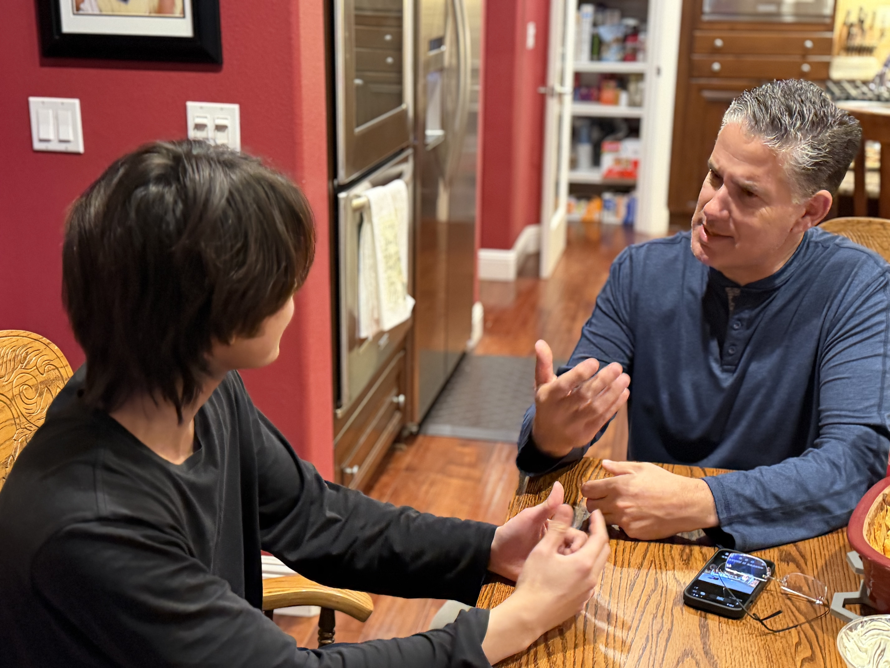
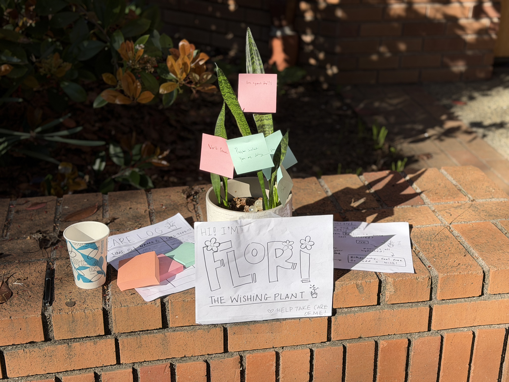
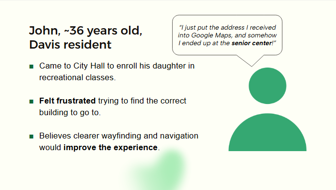
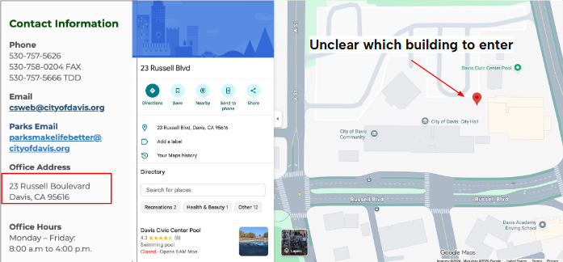
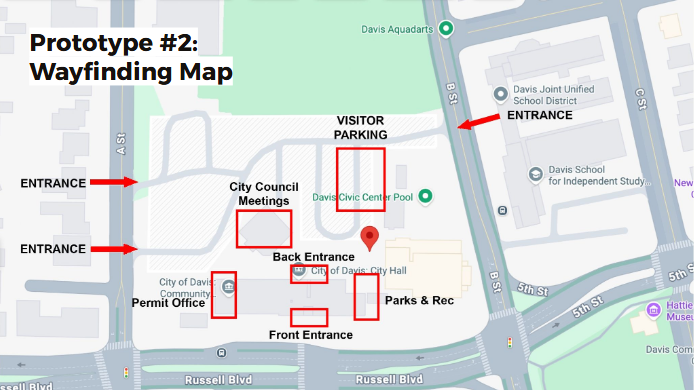
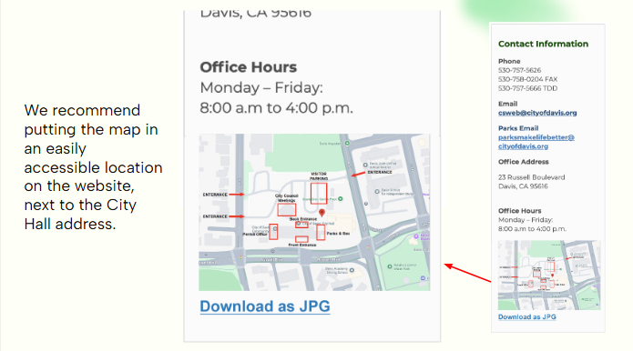

City of Davis · UX Designer · Jan Mar 2026
Finding Davis City Hall
Visitors couldn't figure out which building to enter at Davis City Hall. Through two rounds of research including a first concept our users rejected my team landed on a wayfinding solution and a set of recommendations for the City.
Role
UX Designer [your specific ownership]
Timeframe
January March 2026
Team
4 designers (Team Earl Gray)
Methods
User interviews, concept testing, persona & POV synthesis, lo-fi prototyping
Deliverable
Wayfinding map + recommendations
The Challenge
How might we improve the visitor experience at Davis City Hall while helping the space better reflect the vibrancy and character of the Davis community?
We took a human-centered approach: rather than assume what would help, we started by talking to the people who actually use City Hall.

Research
Who we talked to
14
People interviewed
9
Long-term residents
3
City employees
2
Business owners
This mix let us hear the experience from the people who use City Hall, the people who run it, and the surrounding community.

First Concept And Why It Failed
"This would be great downtown, but not at City Hall."
Our first idea was an Affirmation Tree ("Flori, the Wishing Plant") a community installation meant to align and connect the Davis community.
We tested it. It didn't land. Visitors were clear that City Hall wasn't the place for it:
"This would be great downtown, but not at City Hall."
"People who come to City Hall want to get things done and not stay any longer than they need to."
"It's a great idea, but there's a time and place for things like this, and City Hall is not that place."

A first concept that real users rejected and that we were willing to drop is the most convincing evidence that you design for users, not for yourself.
The Pivot
Co-creating with visitors
So we went back to City Hall with new ideas and asked visitors directly what they wanted. One direction rose above the rest: better wayfinding and navigation.

Synthesis
The real problem
We built a persona from a recurring story. John, ~36, a Davis resident, came to enroll his daughter in recreational classes and got lost trying to find the right building:
"I just put the address I received into Google Maps, and somehow I ended up at the senior center!"

The same frustration showed up across interviews City Hall's layout made navigation hard, and that friction chipped away at the City's credibility with visitors.
"If there were one thing I would change about City Hall, it would be navigation."
"I was so frustrated driving around trying to find where to go."

The core issue: the single address (23 Russell Blvd) drops visitors at an ambiguous point across a multi-building civic center with no clear signal of which entrance serves which purpose.
Prototype & Test
A wayfinding map
Based on those findings, we built a low-fidelity wayfinding map labeling entrances, visitor parking, the permit office, Parks & Rec, and City Council meetings and tested it with City Hall visitors.

Recommendations
What we delivered to the City
- 01 Put the wayfinding map on the City Hall website, right next to the address downloadable as a JPG.
- 02 Fix the Google Maps pins tied to City Hall addresses so visitors land in the right place.
- 03 Add onsite physical signage directing visitors to Parks & Rec sign-ups, the Permit Office, City Council meetings, the Rec Center, the Senior Center, and visitor parking.

Outcome
What happened next
We presented the wayfinding solution and recommendations to the City of Davis. Proposed next steps: updating the City Hall website and links, fixing the map pins, and testing with more visitors who use the map.
[Verify with team whether the City adopted any recommendations before publishing this section.]
Reflection
What I took from it
Our first concept felt right to us but wrong to users testing it cheaply, before we'd over-invested, let us pivot to what visitors actually needed. It's the clearest lesson I took from the project.